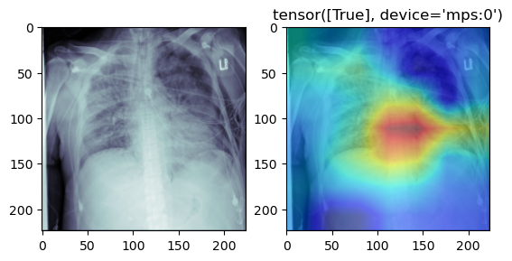
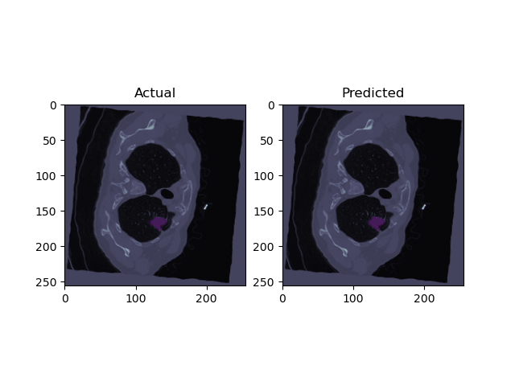

Computer Vision Projects
Vehicle Detection + Tracking App
Streamlit web application for vehicle tracking using different SOTA object detection models. The app offers two options: YOLO-NAS with SORT tracking and YOLOv8 with ByteTrack and Supervision tracking. It enables users to upload a video file, set confidence levels, and visualize the tracking results in real-time. Code: Vehicle Detection + Tracking App
YOLO-NAS & EasyOCR Automatic Number Plate Recognition
This project uses YOLO-NAS and EasyOCR to detect license plates and perform Optical Character Recognition (OCR) on them. The project includes both image and video processing capabilities and has been deployed as a Streamlit web application. This is an update to a previous project, Optical-Character-Recognition-WebApp

Face Mask Detection YOLOv7
Object Detection project created to detect face masks using YOLOv7 trained on a custom dataset. All 853 images were manually annotated using labelimg, two labels were used to classify the images, “Mask” and “No Mask”. The training was performed over 300 epochs and a batch size of 8 using google colab in the YOLOv7 Training.ipynb file.

Pnuemonia Classifcation (PyTorch Lightning)
Developed and evaluated two models, to detect pneumonia cases from medical images. Our custom resnet18 was evaluated at an 81% accuracy, 66% precision, and 78% recall. Valuable for timely detection of pneumonia patients, improving outcomes, and reducing mortality. CAM visualizations provide provide insights into model decision-making
Lung Cancer Segmentation (U-Net)
The purpose of this project is to enhance lung cancer diagnosis and treatment through automatic tumor segmentation, employing advanced algorithms for precise and efficient detection. I was able to Developed a Lung Cancer Segmentation model using the U-Net architecture and PyTorch Lightning framework. Achieved an unimpressive dice loss of 0.0247 more work is required.
